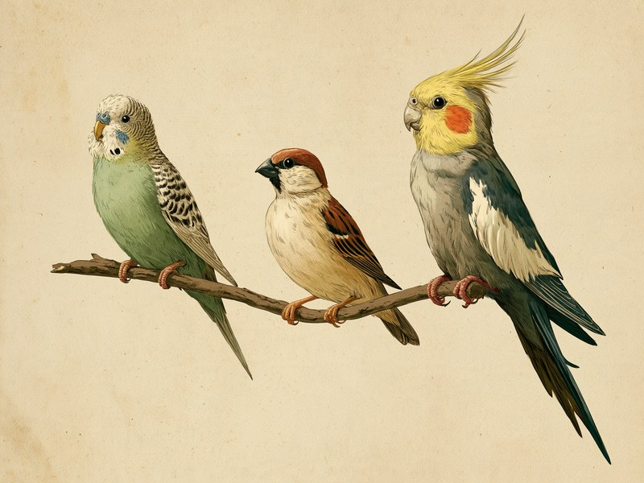

「鳥を飼ってみたい」と思ったとき、まず迷うのが品種選びではないでしょうか。体重12〜18gほどのジュウシマツから、20年以上生きることもあるオカメインコまで、家庭で飼われる鳥は品種によって大きさも寿命も、そして性格の傾向もずいぶん違います。家族に迎える前に、代表的な7品種の顔ぶれと、それぞれの「らしさ」を知っておきましょう。 Thinking about a pet bird? From the tiny society finch to the long-lived cockatiel, popular companion birds differ widely in size, lifespan, and temperament. Here is a friendly guide to seven popular species kept in Japanese homes.
| 品種 | 原産地 | 体長の目安 | 体重の目安 | 寿命の目安 | 性格の傾向 |
|---|---|---|---|---|---|
| セキセイインコ | オーストラリア | 18〜23cm | 30〜40g | 10年以上生きる個体も珍しくない | 人懐っこく好奇心旺盛、オスは活発・メスはおとなしい傾向 |
| 文鳥 | インドネシア(ジャワ島) | 約15cm | 約25g | 8年〜10年弱程度 | 自己主張が強く、気性が荒くなることもある |
| オカメインコ | オーストラリア | — | 個体差が大きい | 平均15〜20年(長寿個体の記録も) | 温和で人懐っこいが寂しがり屋、ストレスを感じやすい |
| コザクラインコ | アフリカ南西部(ナミビア) | 約15cm | 30〜60g | 10〜15年(20年以上の例も) | 自己主張が強い、好きな相手には甘える |
| サザナミインコ | 南米の山岳地帯 | 約15cm | 40〜60g | 平均10年(長寿で15年) | 温和で攻撃性が低い、臆病だが慣れると手乗りに |
| ジュウシマツ | 日本で品種改良(野生種なし) | 約12cm | 12〜18g | 平均3〜10年(10年以上生きる例も) | 温和で人懐っこく寂しがり屋、群れ・つがい飼育を好む |
| カナリア | カナリア諸島 | 12〜14cm程度 | — | 7年台〜十数年程度(資料により幅あり) | オスは繁殖期に美しくさえずる、メスはほとんど鳴かない |
出典を見る
数値・傾向は本文中の出典に基づく目安です。情報源によって数値に幅があり、個体差もあります。
飼い鳥の入門にいちばん名前が挙がる:セキセイインコ
ペットの鳥といえばまず名前が挙がるのがセキセイインコです。原産はオーストラリアで、体長18〜23cm、体重30〜40gほど。近年は10年以上生きる個体も珍しくありません。性格は人懐っこく好奇心旺盛で、初めて鳥を飼う人にも勧められる品種です。オスは活発、メスはおとなしい傾向があるとされています。
オスとメスは、くちばしの付け根にある「ろう膜」の色で見分けられます。オスは青〜紺色、メスは白〜ベージュ〜茶色が基本ですが、色変わりの品種ではこの判別法が使えません。
出典を見る
出典: Wikipedia日本語版(原産地・体長・体重・ろう膜による判別)「セキセイインコ」 ja.wikipedia.org / PECO(寿命) peco-japan.com / petrear(性格の傾向・初心者向きとされる点) petrear.jp
インコではなくスズメの仲間:文鳥
インコと並んで定番の文鳥ですが、実はインコの仲間ではなくスズメ目の鳥です。原産はインドネシアのジャワ島。体長は約15cm、体重は約25gとセキセイインコよりひとまわり小さく、寿命は8年〜10年弱程度が目安とされています。
性格は自己主張が強く、気性が荒くなることもあるとされています。小さな体から想像しにくいですが、鳥の飼育に慣れていない初心者にも飼いやすいとされている品種です。
出典を見る
出典: アニコム損保(原産地・分類・体長・体重・寿命・性格の傾向) anicom-sompo.co.jp / 東京コミュニケーションアート専門学校(体長・寿命の目安) tcaeco.ac.jp
長い付き合いになる寂しがり屋:オカメインコ
オカメインコの原産はセキセイインコと同じオーストラリア。体重は資料による数値の開きが大きく「個体差が大きい」とだけお伝えします。寿命は平均15〜20年で、それを大きく超えて生きた記録もあり、10年、20年先の暮らしまで思い描いておきたい品種です。
性格は温和で人懐っこい一方、寂しがり屋でストレスを感じやすいとされています。野生のオカメインコは大きな群れで暮らす鳥で、ひとりぼっちの時間が長いと不安になりやすいのは、そうした生まれつきの性質の表れといえそうです。
出典を見る
出典: 山口大学農学部・早崎峯夫氏の資料(原産地・野生下の群れ行動・寿命の記録) petit.lib.yamaguchi-u.ac.jp / MOFFME(獣医師監修、平均寿命の目安) moffme.com(体重は資料によって示される数値に幅があるため、本記事では具体的な数値を記載していません)
同じ15cmでも性格は正反対:コザクラインコとサザナミインコ
体長がどちらも約15cmながら性格の傾向がまるで違うのがコザクラインコとサザナミインコです。コザクラインコはアフリカ南西部ナミビアが原産。体重30〜60g、寿命10〜15年(長寿の個体では20年以上の例も)。性格は自己主張が強く、好きな相手にはとことん甘える一方、相手によっては攻撃的になることもあります。
対するサザナミインコは、南米の山岳地帯(パナマ西部〜ベネズエラ、コロンビア、エクアドル、ペルー、ボリビアの冷涼な森林地帯)が原産。体重40〜60g、寿命は平均10年(長寿で15年ほど)。性格は温和で攻撃性が低く、臆病なところはあるものの慣れると手乗りになります。
出典を見る
出典: Wikipedia日本語版(コザクラインコの原産地・体長・体重・寿命・性格)「コザクラインコ」 ja.wikipedia.org / Wikipedia日本語版(サザナミインコの原産地・体長・体重・寿命・性格)「サザナミインコ」 ja.wikipedia.org
群れで暮らす子と、歌で魅せる子:ジュウシマツとカナリア
ジュウシマツは、ほかの6品種と決定的に違う点があります。野生種が存在しないのです。江戸時代に中国から輸入されたコシジロキンパラを日本で品種改良して生まれた家禽で、いわば「日本育ちの飼い鳥」。体長は約12cm、体重は12〜18gと最小クラスで、寿命は平均3〜10年(適切に飼育すれば13年以上生きる例も)。性格は温和で人懐っこく寂しがり屋で、群れやつがいでの飼育を好みます。丈夫で病気をしにくく、初心者向きの品種として知られています。
一方のカナリアは、大西洋のカナリア諸島が原産。標準的な品種は体長12〜14cm程度で、寿命は7年台〜十数年と資料により幅があります。魅力は歌声で、オスは繁殖期に美しく長くさえずりますが、メスはほとんど鳴かないか鳴いても小さな声にとどまるため、「歌を楽しみたい」なら性別も選ぶポイントです。
出典を見る
出典: MOFFME(ジュウシマツの成り立ち・体長・体重・寿命・性格) moffme.com / 山口大学学術リポジトリ(カナリアの原産地・体長・寿命・さえずり) petit.lib.yamaguchi-u.ac.jp
「何年いっしょにいるか」から考える:品種選びの3つの軸
ここまで見た7品種から、選ぶときの軸を3つに整理します。ひとつめは寿命。平均3〜10年のジュウシマツから、平均15〜20年でそれを大きく超えて生きる記録もあるオカメインコまで幅があり、「いま飼えるか」だけでなく「10年後も飼えるか」を考えておくことが鳥選びでは大切です。ふたつめは性格の傾向。人懐っこいセキセイインコ、温和なサザナミインコ、自己主張が強く相手を選ぶコザクラインコと、同じ「インコ」でも性質はさまざまです。ジュウシマツやオカメインコのように、ひとりの時間が苦手な子もいます。
みっつめは鳴き声との付き合い方。カナリアのようにオスが繁殖期によくさえずる品種もあります。歌声を楽しみたいのか静かな暮らしを望むのか、住まいの環境やどんな時間を鳥と過ごしたいかによって選択は変わってきます。ここで紹介した性格はあくまで品種ごとの傾向です。実際に迎える際は目の前の子をよく観察して、その子に合った距離感を見つけてください。
出典を見る
この節は上記各節の出典に基づく整理で、新たな情報源は用いていません。
品種ごとの違いも面白いのですが、鳥の体そのもののふしぎもなかなかのものです。たとえばフクロウは、目玉をほとんど動かせない代わりに首を270度も回してあたりを見回します。飼い鳥ではありませんが、鳥の体の「割り切った設計」を知るきっかけとして、フクロウはなぜ首が270度も回るの?もあわせてどうぞ。
ミニクイズ:セキセイインコの「ろう膜の色でオス・メスを見分ける方法」は、どの毛色の子にも使える?(タップして答えを見る)
こたえ×。基本的にはオスが青〜紺色、メスが白〜ベージュ〜茶色のろう膜になりますが、色変わりの品種ではこの判別法が使えません。見た目だけで性別を決めつけないようにしましょう。